Procesador intel Pentium
Año: 1983
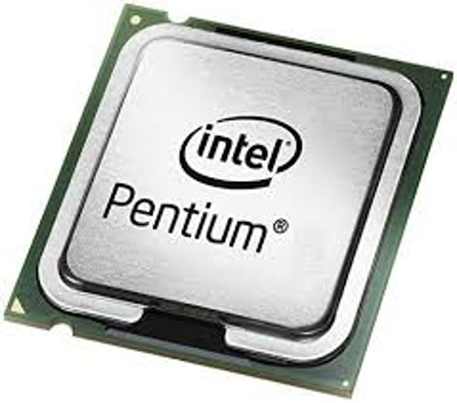
- Cantidad de núcleos 1.
- Frecuencia de reloj de CPU 60MHz — 300MHz
- Velocidad de FSB 50MHz — 66MHz
- Longitud del canal MOSFET 0,8µm — 0,25µm
- Conjunto de instrucciones x86
Procesador intel pentium Pro
Año: 1995
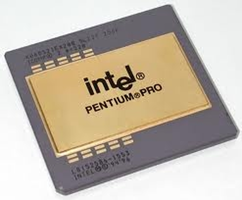
- Cantidad de núcleos 1.
- Frecuencia básica del procesador 180 MHz.
- Caché 256 KB L2 Cache.
- Velocidad del bus 60 MHz.
- TDP 31,7 W.
- Rango de voltaje VID 3.3V.
Procesador pentium 2
Año: 1997
- Cantidad de núcleos 1.
- Frecuencia básica del procesador 233 MHz.
- Caché 512 KB L2 Cache.
- Velocidad del bus 66 MHz.
- TDP 34,8 W.
- Rango de voltaje VID 2.8V
Procesador intel Celeron
Año: 1999
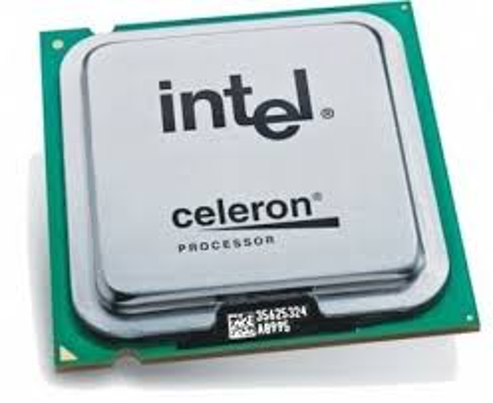
- Frecuencia de reloj de CPU 266MHz — 3.6
- Velocidad de FSB 66MT/s — 1066MT/s
- Longitud del canal MOSFET 250 — 32
- Conjunto de instrucciones x86, EM64T
Procesador Intel pentium 3
Año: 1999

- Cantidad de núcleos 1.
- Frecuencia básica del procesador 1,00 GHz.
- Caché 256 KB L2 Cache.
- Velocidad del bus 133 MHz.
- TDP 29 W.
- Rango de voltaje VID 1.75V
Procesador intel pentium 4
Año: 2000
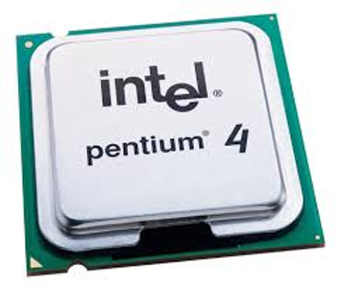
- Cantidad de núcleos 1.
- Frecuencia básica del procesador 2,60 GHz.
- Caché 512 KB L2 Cache.
- Velocidad del bus 400 MHz.
- Paridad FSB No.
- TDP 62,6 W.
- Rango de voltaje VID 1.345V-1.525V.
Procesador intel pentium M
Año: 2003
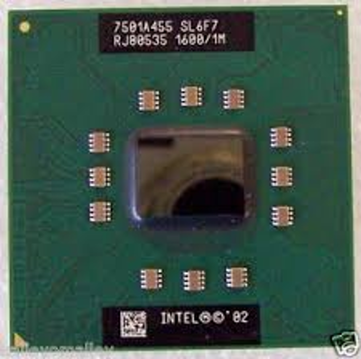
- Cantidad de núcleos 1.
- Frecuencia básica del procesador 1,60 GHz.
- Caché 1 MB L2 Cache.
- Velocidad del bus 400 MHz.
- Paridad FSB No.
- TDP 24,5 W.
- Rango de voltaje VID 0.956V-1.484V.
Intel Pentium D
Año: 2005
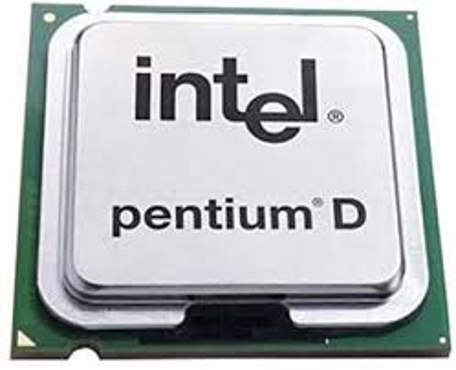
- Cantidad de núcleos 2
- Frecuencia básica del procesador 2,80 GHz
- Caché 2 MB L2 Cache
- Velocidad del bus 800 MHz
- Paridad FSB No
- Rango de voltaje VID 1.200V-1.400V
Procesador intel pentium dual-core
Año: 2006
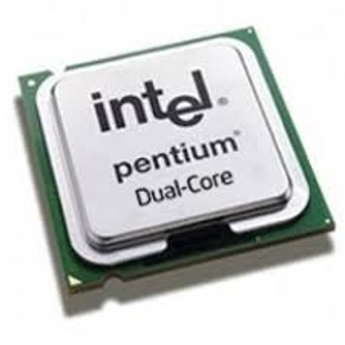
- Procesadores de doble nucleo con 1MB de cache de nivel 2 compartido
- Bus externo de 533 / 800 MHz
- Execute Disable Bit
- Set de instrucciones SSE3
- Tecnología SpeedStep mejorada
- Socket 775
Procesador intel Core 2 Duo
Año: 2006
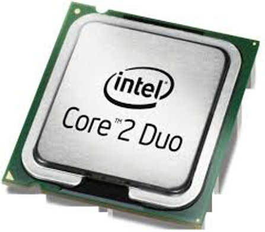
- Cantidad de núcleos 2.
- Frecuencia básica del procesador 3,00 GHz.
- Caché 6 MB L2 Cache.
- Velocidad del bus 1333 MHz.
- Paridad FSB No.
- TDP 65 W.
- Rango de voltaje VID 0.8500V-1.3625V.
Procesador intel Atom
Año: 2008
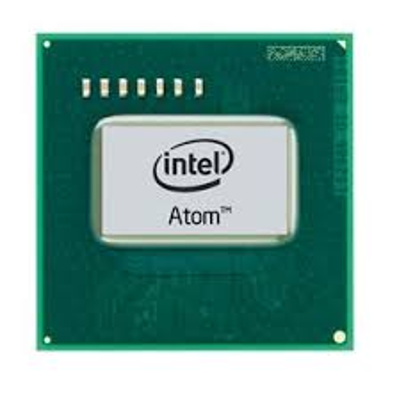
- Cantidad de núcleos 1.
- Frecuencia de reloj de CPU 600 MHz — 2,40 GHz
- Velocidad del bus 400 MHz.
- Velocidad de FSB 400 MHz — 667 MHz
- Longitud del canal MOSFET 45 nm — 14 nm
Intel core i3
Año: 2010
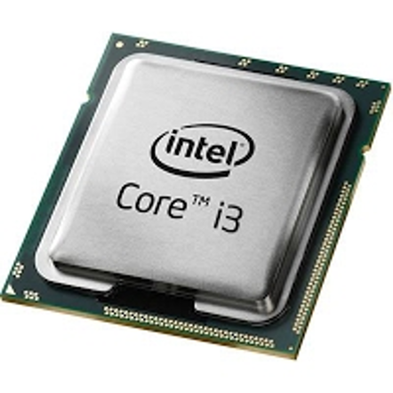
- son procesadores de doble núcleo con procesador gráfico la CPU denominada intel HD que funciona a 733 megahercios posee en 4000 de cache de nivel 2
- 2 Núcleos.
- 4 Subprocesos.
- 3.80 GHz Frecuencia turbo máxima.
Intel core i5
Año: 2011
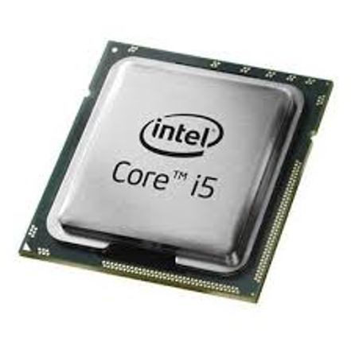
- diseñados para usuarios que realizan tareas 8y aplicaciones mas exigentes, ediciones de video o para ejecutar juegos pesados, etc..
- 8 MB Intel® Smart Cache Caché
- 4 Núcleos.
- 8 Subprocesos.
- 4.20 GHz Frecuencia turbo máxima.
Intel core i7
Año: 2011
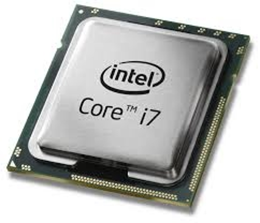
- procesadores de gama alta , necesitan de un buen ordenador para instalarlo,actual mente sonb los procesadores mas potentes que existen son considerados los procesadores de ultima generación
- 16 MB Intel® Smart Cache Caché
- 8 Núcleos.
- 16 Subprocesos.
- 4.80 GHz Frecuencia turbo máxima.
Intel core i9
Año: 2013
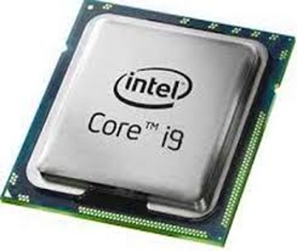
- Los procesadores mas potentes en todo el mundo cumplen con mayor potencia a diferencia de su predecesor intel core i7 estos procesadores son utilizados en grandes empresas y son altamente caros
- 16 MB Intel® Smart Cache Caché
- 8 Núcleos.
- 16 Subprocesos.
- 5.00 GHz Frecuencia turbo máxima.
Regresar al inicio